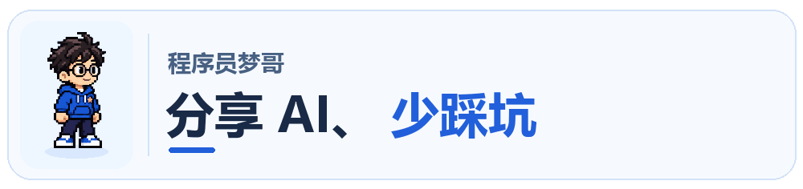

<!doctype html>
<html lang="zh-CN">
<meta charset="utf-8">
<meta name="viewport" content="width=device-width, initial-scale=1">
<title>程序员梦哥 · WorkBuddy 片头样片</title>
<style>
  body { max-width: 44rem; margin: 3rem auto; padding: 0 1rem; font: 16px/1.6 system-ui, sans-serif; color: #192a46; }
  h1 { margin: 0; font-size: 1.5rem; }
  p { color: #486182; }
  figure { margin: 1.5rem 0; max-width: 375px; }
  img { display: block; width: 100%; height: auto; }
  figcaption { color: #486182; font-size: .85rem; text-align: center; }
  button, a { font: inherit; color: #225fda; margin-right: 1rem; }
  button { background: #eef6ff; border: 1px solid #d3e2f7; border-radius: .5rem; padding: .3rem .7rem; cursor: pointer; }
</style>
<main>
  <h1>程序员梦哥 · WorkBuddy 片头样片</h1>
  <p>回复风格：选「高效务实」，把结论放到前面。</p>
  <figure>
    
    <figcaption>手机正文宽度预览 · 5.4 秒循环 · 示意动画，非产品录屏</figcaption>
  </figure>
  <button id="replay" type="button">从头播放</button>
  <a href="intro.gif" download>下载 GIF</a>
</main>
<script>
  const intro = document.querySelector('#intro');
  document.querySelector('#replay').addEventListener('click', () => {
    intro.src = `intro.gif?replay=${Date.now()}`;
  });
</script>
</html>
